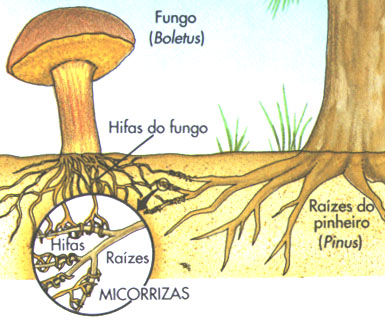

O Reino Fungi é um dos cinco reinos da vida, é constituído por organismos eucariontes unicelulares ou pluricelulares que são encontrados em uma grande variedade de ambientes. Os fungos incluem cogumelos, mofos, orelhas de pau, líquens e outros organismos. Os fungos são um grupo diverso de organismos que variam de leveduras unicelulares a cogumelos multicelulares complexos. Eles são encontrados em quase todos os ambientes da Terra e desempenham papéis importantes em muitos ecossistemas
O Reino Fungi é um dos cinco reinos da vida, é constituído por organismos eucariontes unicelulares ou pluricelulares que são encontrados em uma grande variedade de ambientes. Os fungos incluem cogumelos, mofos, orelhas de pau, líquens e outros organismos. Os fungos são um grupo diverso de organismos que variam de leveduras unicelulares a cogumelos multicelulares complexos. Eles são encontrados em quase todos os ambientes da Terra e desempenham papéis importantes em muitos ecossistemas
Uma das características definidoras dos fungos é que eles são heterotróficos, o que significa que obtêm seus nutrientes absorvendo matéria orgânica de seu ambiente. Os fungos produzem enzimas que quebram moléculas complexas, como celulose e lignina em madeira e quitina em exoesqueletos de insetos, permitindo que eles decomponham materiais mortos de plantas e animais e reciclem nutrientes de volta para o ecossistema. Por muito tempo, os fungos foram classificados no reino vegetal devido a características semelhantes às plantas. No entanto, diferem fundamentalmente por não apresentarem clorofila ou qualquer outro pigmento fotossintetizante.
Os fungos possuem uma grande diversidade de formatos. A maioria é composta por corpos pluricelulares constituídos de hifas, enquanto outros são unicelulares, como as leveduras. A reprodução dos fungos pode ocorrer tanto de forma sexuada quanto assexuada. Os fungos são compostos por um emaranhado de tubos ramificados, envolvidos por uma parede de quitina (polissacarídeo presente no exoesqueleto dos artrópodes). Esse emaranhado é denominado micélio e os tubos que o compõem são chamados de hifas.
 As hifas podem ser de dois tipos: cenocíticas, quando não possuem paredes transversais, chamadas septos, e possuem núcleos espalhados pelo citoplasma; e septadas, quando possuem compartimentos celulares delimitados pelos septos, formando células com um ou dois núcleos. No entanto, a compartimentação é incompleta porque os septos possuem poros que permitem a comunicação entre células vizinhas. Os fungos crescem em vários substratos, como pão, frutas podres, troncos de madeira ou outros fungos. Em organismos mais complexos, o micélio forma um talo ou corpo de frutificação com forma bem definida que caracteriza diferentes espécies. Quando vemos um cogumelo ou mofo nos alimentos, estamos vendo o talo, mas no interior do substrato onde ele se encontra, já há uma grande rede de hifas enraizadas.
Os fungos são heterotróficos por absorção, o que significa que absorvem os nutrientes que são difundidos no interior de suas células. Para isso, eles usam enzimas que fazem a digestão das substâncias encontradas no ambiente.
A reprodução das leveduras é feita por gemulação ou brotamento, gerando gêmulas ou brotos que podem se separar da célula original ou permanecer grudados formando cadeias de células. Em muitos outros fungos, a reprodução ocorre através de esporos, células haploides que, ao encontrar condições propícias, germinam e originam um novo micélio, completando o ciclo assexuado. Essa forma de reprodução assexuada é chamada de esporulação.
 Por outro lado, a reprodução sexuada dos fungos é um processo complexo que envolve a fusão de duas células sexuais haploides (n), chamadas gametas, para formar uma célula diploide (2n), que é o zigoto. A célula diploide então passa por meiose, que produz quatro células haploides, cada uma com metade do número de cromossomos da célula original.
Por outro lado, a reprodução sexuada dos fungos é um processo complexo que envolve a fusão de duas células sexuais haploides (n), chamadas gametas, para formar uma célula diploide (2n), que é o zigoto. A célula diploide então passa por meiose, que produz quatro células haploides, cada uma com metade do número de cromossomos da célula original.
Essas células haploides são chamadas de esporos sexuais e são a forma pela qual os fungos se reproduzem sexuadamente. Os esporos sexuais são liberados no ambiente e podem se espalhar por longas distâncias, permitindo que os fungos colonizem novos habitats.
Os esporos sexuais também podem passar por um período de dormência antes de germinar e formar um novo micélio haploide. Quando as condições são favoráveis, o micélio haploide se desenvolve em um novo indivíduo de fungo.
A reprodução sexuada dos fungos é importante porque aumenta a variabilidade genética da população, permitindo que os fungos se adaptem a novos ambientes e desafios. Além disso, a reprodução sexuada pode ajudar a eliminar mutações prejudiciais e a fortalecer a resistência dos fungos a doenças e outros fatores estressantes.